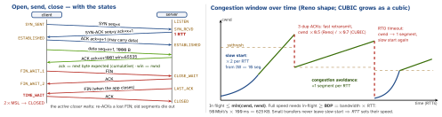

networking · folio
In one line: TCP turns lossy IP packets into one reliable, ordered byte stream: a 3-way handshake agrees on sequence numbers, ACKs + retransmission recover loss, the receive window protects the receiver (flow control), the congestion window protects the network. UDP is ports + checksum and nothing else. QUIC rebuilds TCP’s guarantees per stream on UDP with TLS 1.3 inside — 1-RTT setup, no cross-stream head-of-line blocking, survives an IP change.
Download PDF Print view LaTeX source


TCP
- Header (20–60 B): ports · seq (number of the first payload byte) · ack (next byte expected) · flags
SYN ACK FIN RST PSH URG ECE CWR· 16-bit window · checksum · options (MSS, window scale ≤14 ⇒ 1 GiB, SACK, timestamps). The 4-tuple (IPs + ports) is the connection. - Open: random ISNs (anti-spoofing); SYN and FIN each consume a sequence number; MSS 1460 on a 1500-byte MTU (IPv4). Close: each direction separately (half-close) → 4 segments; the first closer holds TIME_WAIT 2×MSL (RFC MSL 2 min; Linux 60 s).
RSTaborts at once. - Loss: 3 duplicate ACKs → fast retransmit; RTO expiry → retransmit + slow start from 1 segment. SACK reports which ranges arrived.
- Flow control ≠ congestion control: rwnd = receiver’s free buffer, in every ACK (0 → sender stops, probes); cwnd = sender’s guess of the network. Reno, CUBIC (RFC 9438, Linux’s default) are loss-based; BBR (Google) models bottleneck bandwidth + min RTT and paces — better on lossy radio and against bufferbloat.
- Nagle (RFC 896) holds small segments while data is unacked; delayed ACK (RFC 1122: <0.5 s, every 2nd full segment) holds the ACK ⇒ write-write-read stalls tens to hundreds of ms. Fix:
TCP_NODELAY(noDelay) or one write. - Head-of-line blocking: in-order delivery — one lost segment stalls every byte behind it, i.e. every HTTP/2 stream on the connection.
UDP — what you do not get
8-byte header (ports, length, checksum). No handshake, order, retransmission or congestion control; message boundaries kept; oversize datagrams fragment or drop. Used by DNS, QUIC, RTP/WebRTC, games, mDNS. NATs forget idle UDP mappings fast → keepalives.
Example — Network.framework knobs
import Network
let tcp = NWProtocolTCP.Options()
tcp.noDelay = true // Nagle off: small RPC-style writes
tcp.connectionTimeout = 5 // seconds for the handshake
tcp.enableKeepalive = true; tcp.keepaliveIdle = 30
let conn = NWConnection(host: "api.example.com", port: 443,
using: NWParameters(tls: .init(), tcp: tcp))
conn.stateUpdateHandler = { state in // preparing/ready/waiting/failed
if case .waiting(let err) = state { print("no path yet", err) } }
conn.start(queue: .main)
// QUIC (iOS 15): NWParameters(quic: NWProtocolQUIC.Options(alpn: ["h3"]))
// URLSession: h3 when offered (iOS 15); MPTCP: multipathServiceTypeQUIC — why it exists (RFC 9000/9001/9002, 2021)
- Ossification: TCP lives in kernels and middleboxes that drop the unfamiliar. QUIC runs in user space over UDP and encrypts almost all of its header (even packet numbers), so the network cannot come to depend on it.
- Streams native, loss per stream. Stream-ID bit 0 = opener (client 0 / server 1), bit 1 = bidi 0 / uni 1. Packet numbers never reused (a retransmission is a new packet) → unambiguous RTT samples; ACK ranges = built-in SACK.
- Migration: connection IDs, not the 4-tuple; a new IP is checked with
PATH_CHALLENGE/PATH_RESPONSEand the connection continues. - Anti-amplification: the client pads its first Initial to ≥1200 B; an unvalidated server sends ≤3× what it received.
- Costs: more CPU than kernel TCP; UDP blocked or throttled on some networks → clients race / fall back to TCP; opaque to middleboxes (by design).
Compare
| TCP | UDP | QUIC | |
|---|---|---|---|
| setup | 1 RTT (+1 TLS 1.3) | 0 | 1 RTT incl. TLS; 0-RTT resume |
| delivery | ordered bytes | none | ordered per stream |
| HOL | whole connection | — | per stream |
| congestion | kernel: CUBIC, BBR | yours | in app (RFC 9002: NewReno) |
| identity | 4-tuple | — | connection ID → migrates |
| crypto | optional TLS on top | none | mandatory, headers too |
Traps
- Flow control ≠ congestion control: receiver buffer (rwnd) vs network capacity (cwnd).
- Thousands of
TIME_WAITs on a server: the server closes first. Let clients close, keep connections alive; don’t shrink MSL. - Half-open sockets look alive; TCP keepalive defaults to 2 h — use app heartbeats.
- More bandwidth rarely speeds a small API call: it is RTT- and slow-start-bound.
Remember
“rwnd: receiver, cwnd: network, TIME_WAIT: who hangs up first; QUIC = TCP per stream.”